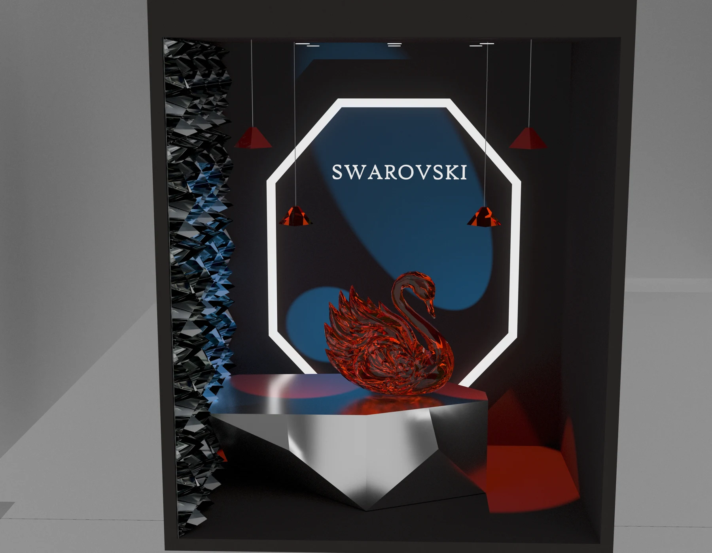
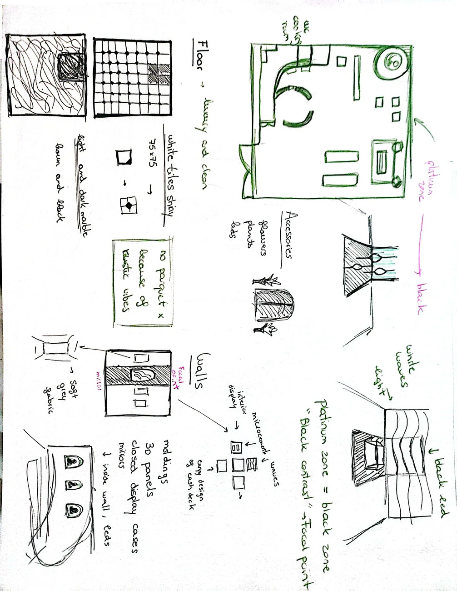
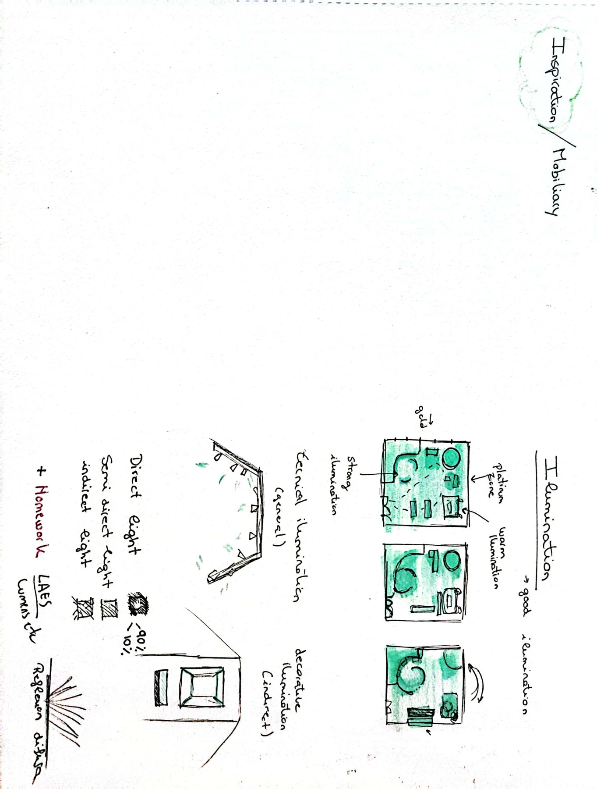
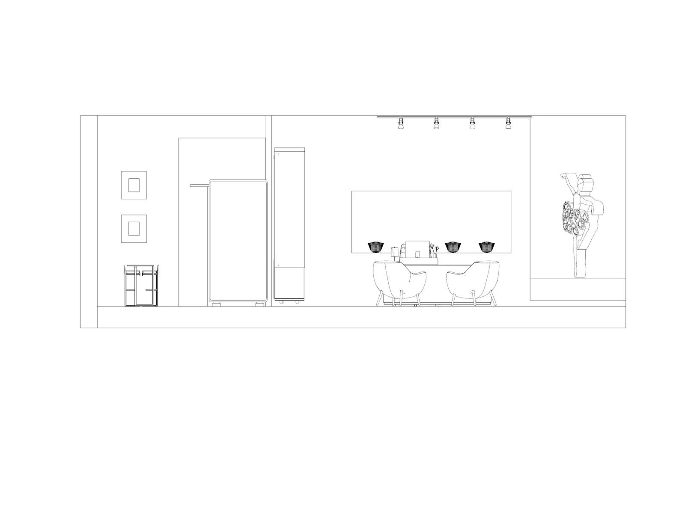

Diseño de interiores
Swarovski
Proyecto académico de Window Dressing que imagina un encuentro entre Swarovski y El Lago de los Cisnes. La propuesta traslada el universo de la obra a una composición de escaparate.







